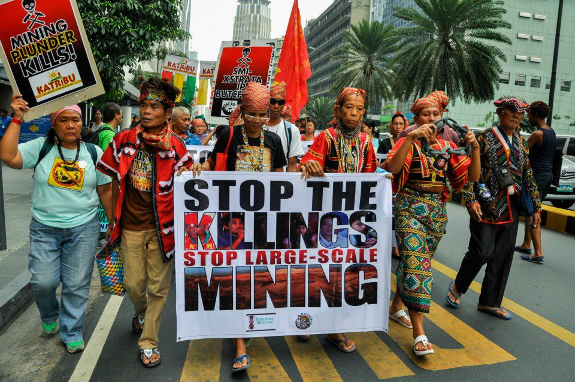
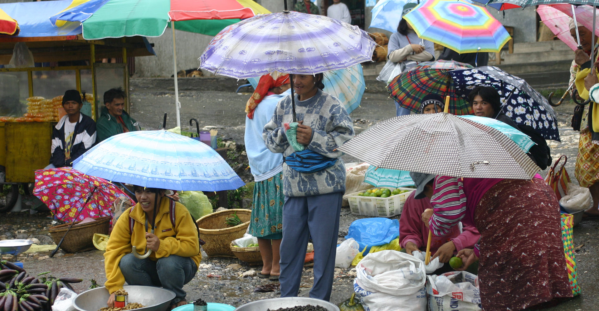
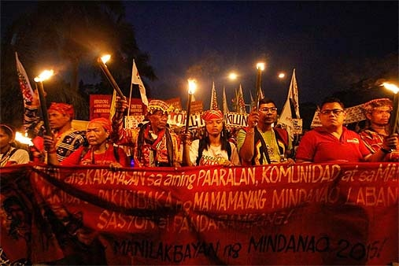
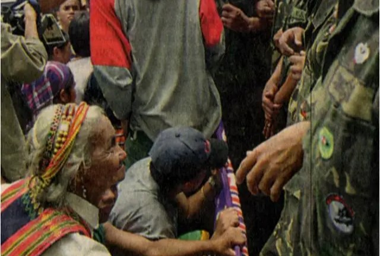

The effect of the U.S. land laws continued after the Philippines became an independent state in 1946. While many of these laws were subsequently amended by the Philippine legislature, they retained their basic objectives and features. IPRA initiated the new era of settling land claims, this time by the indigenous peoples in relation to their ancestral domains. But the establishment of such claims did not always end their land problems. Another law was enacted two years before that affected the claims of indigenous communities to land where minerals exist. The importance of land and territories to Indigenous cultural identity cannot be stressed enough. However, Indigenous Peoples have continued to experience loss of access to lands, territories and natural resources. The result has been that Indigenous cultures today are threatened with extinction in many parts of the world. Due to the fact that they have been excluded from the decision-making and policy frameworks of nation-states in which they live and have been subjected to processes of domination and discrimination, their cultures have been viewed as being inferior, primitive, irrelevant, something to be eradicated or transformed.
The indigenous peoples, to a large extent “forgotten” by the government, are in the midst of problems. Although most indigenous communities live in isolated rural areas, a growing number are migrating to cities in search of better livelihoods and social services. Many are driven from their traditional lands by militarization, tribal conflicts and the expansion of large-scale development projects, which frequently bring little or no benefits to local communities, particularly women: many indigenous women, unable to secure employment with the mining companies and leave to find work in urban areas, suffering extreme poverty in cities like the northern city of Baguio or the capital city, Manila. They often face poverty and exclusion as a result of their limited formal education and the fact that their skills may not be suited to an urban context. In Baguio – where indigenous people make up over 60 per cent of the population – it is estimated that some 65 per cent of indigenous migrants suffer from extreme poverty. Many of them are migrant women working as vendors in the city streets, where they are regularly pestered by police as part of the government’s anti-peddling drive.
Reports by various human rights organizations show human rights violations relating to mining operations in ancestral lands, while other human rights of indigenous peoples continue to be violated in general.
Lack of access to basic social services, education, sustainable livelihood, farm-to-market roads, and health services contribute to their continuing poverty. In many cases, the onslaught of commercialism and modern culture came at the expense of maintaining their own culture and tradition (and thus their identity).
However, there are other issues that have remained unresolved. Reports by various human rights organizations show human rights violations relating to mining operations in ancestral lands, while other human rights of indigenous peoples continue to be violated in general.
Physical isolation does not shield them from being caught in the crossfire in the on- going armed conflicts in the country, many suffered as internally displaced persons (IDPs) and some killed or detained and tortured as suspected members of the armed opposition groups.
